Projects I Have Worked on
Music Library Platform
Skills used: Java, Spring Boot, MongoDB, JavaScript, HTML/CSS
Description: A full-stack music library application built with Spring Boot, MongoDB, and vanilla JavaScript. Users can register and log in to browse a curated catalog of songs across multiple genres including Pop, Rock, Country, and Rap. The app allows users to search songs by title, artist, genre, or mood, mark favorites, and view their personal library. The backend REST API is built with Java and Spring Boot, with song data stored in MongoDB Atlas, and the frontend is an interactive web interface served directly by the Spring Boot application.
Login
Allows user to login and create an account. Data is stored in a database, so the user can logout, and log
back in, keeping all of their data.
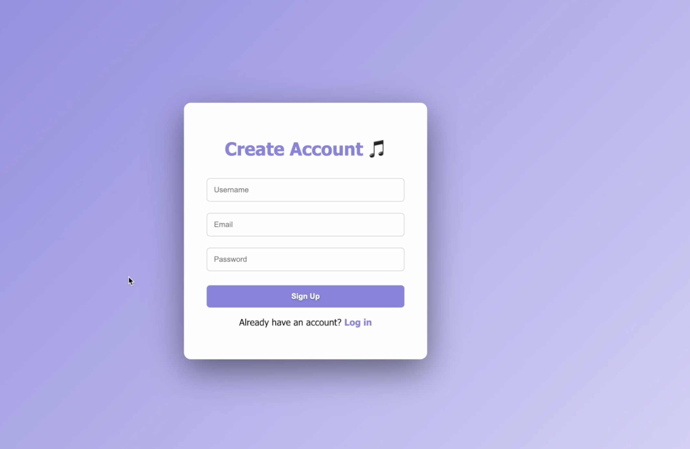
Song Library
Database of 20 songs that are available to be played, saved, and added to a playlist by a user.
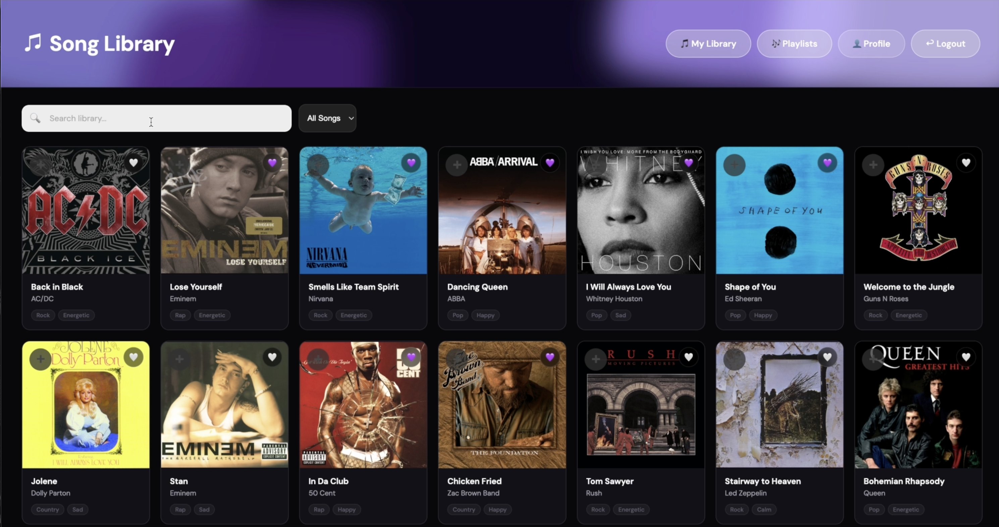
Saved Songs
Allows users to save songs to their profile, for easier access.
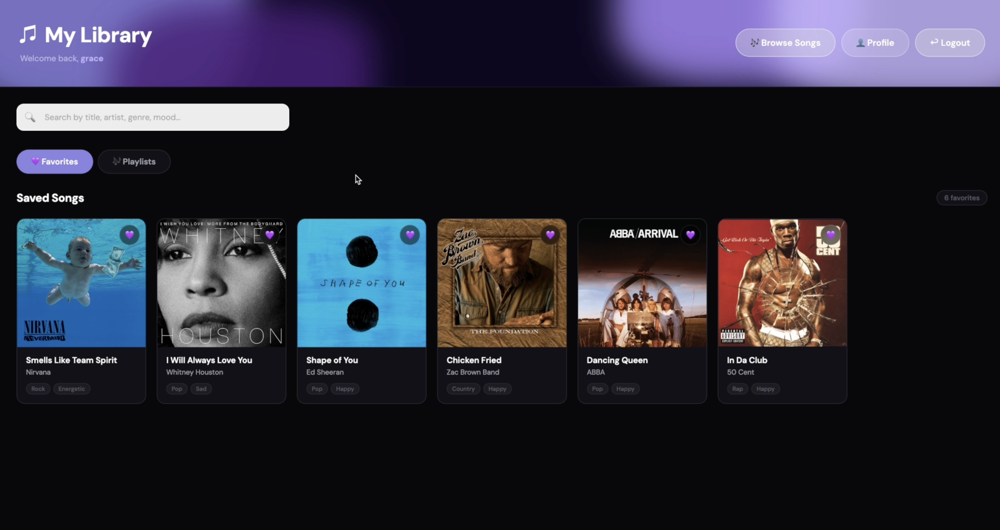
Searched Songs
Allows users to search for songs based on title, artist, genre, and mood.
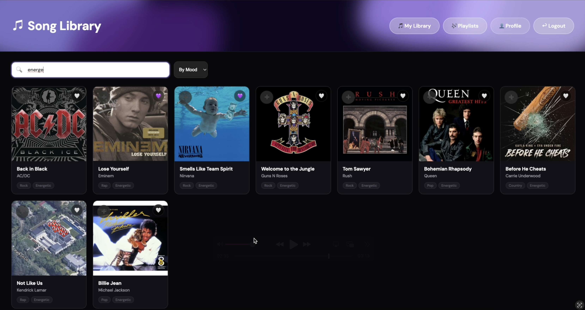
User Profile
Allows users to set their privacy levels, and add/remove friends, and view those attributes.
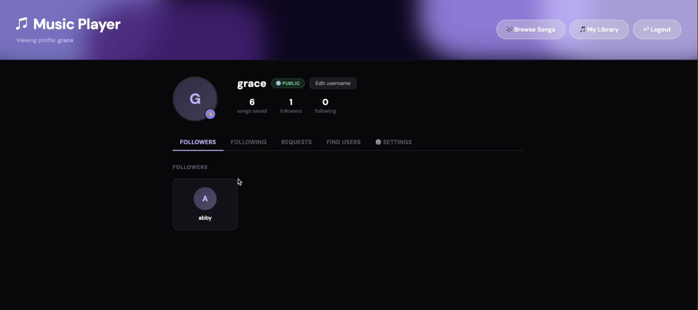
Database GUI Application
Skills used: Java, MySQL, SQL, Database Design, Normalization (3NF), CSV Processing
Description: A full-stack database application built to help potential investors explore cobalt mining opportunities within the United States. Using data sourced from the US Geological Survey, the project involved designing a normalized relational database (3NF) in MySQL, building an ER diagram, and loading 11 datasets covering site locations, geological occurrences, production history, resources, and more. The backend includes custom SQL functions and stored procedures to support known business operations, and a prototype application was developed to allow investors to query and view select portions of the database in a clean, functional interface.
ERD
Entity-Relationship Diagram showing the full database design for the cobalt mining dataset, normalized to
3rd normal form with all tables, attributes, and relationships fully resolved.

Database Application Home Page
The main landing page of the application, providing navigation to key sections of the cobalt mining
database.

Table View Example
A sample view of one of the database tables, demonstrating the application's ability to display raw data
from the US Geological Survey dataset in a readable format.
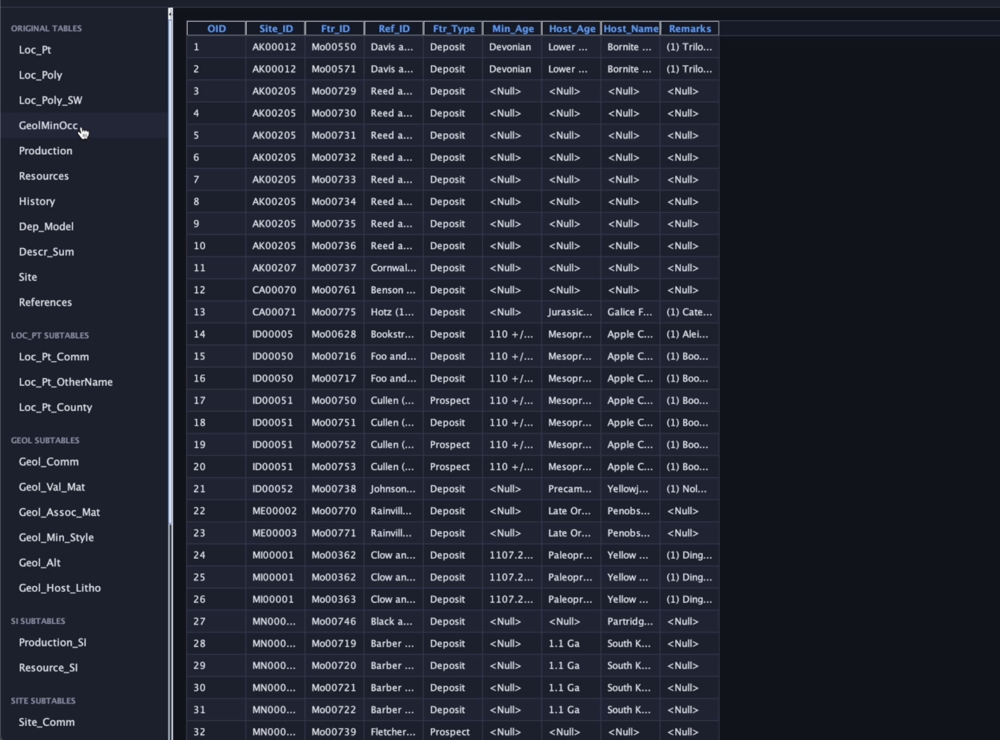
Cleaned Resources
A view of the Resources table after data cleaning and normalization, showing material amounts, grades,
and units for cobalt reserves across US mine sites.
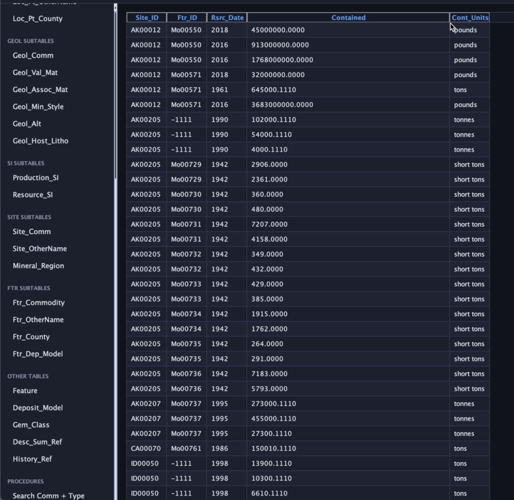
Search Capability
A demonstration of the application's search functionality, allowing users to query the database and
filter results to find specific cobalt mining sites or related data.
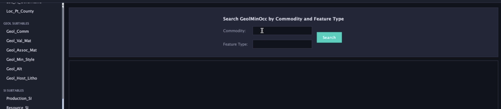
Nutrition and Wellness App With Built-in Chatbot
Skills used: Java, Spring Boot, Python, Ollama, SLM Training, RAG (Retrieval-Augmented Generation), MongoDB, HTML, CSS, JavaScript
Description: A nutrition and wellness application currently in development, featuring an AI-powered chatbot built on a custom-trained Small Language Model (SLM) integrated with a Retrieval-Augmented Generation (RAG) system to provide accurate, context-aware dietary guidance from a curated knowledge base. The model is trained and served locally using Ollama. The backend is built with Java and Spring Boot, with data stored in MongoDB. Planned features include macro and micronutrient tracking, cycle syncing, and workout logging. The app aims to provide users with a comprehensive health companion tailored to their individual needs and goals.
Chatbot
Working chatbot on the command line that can recognize context, and provide and answer based on that
input.
Asking the chatbot a specific nutrition question about myself, and my needs.
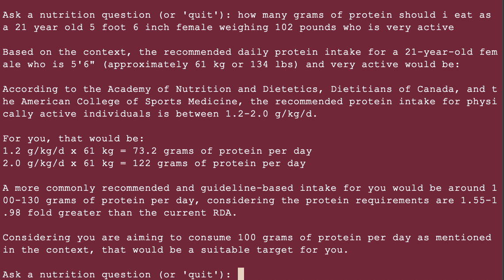
Asking the chatbot a specific nutrition question about foods high in a specific macronutrient.
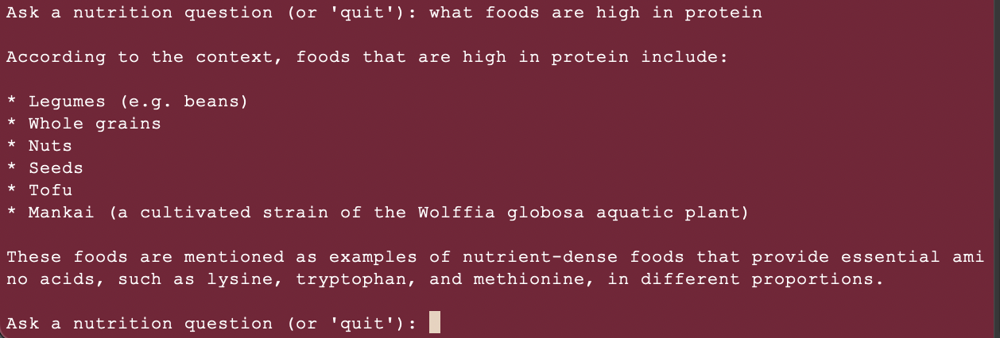
Asking the chatbot a specific nutrition question about vitimins in a certain food.
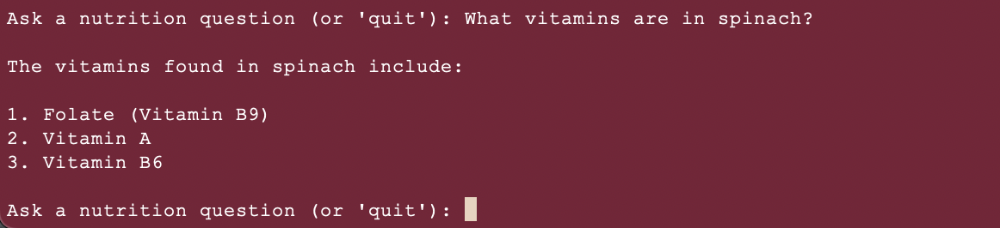
This Website
Skills used: HTML/CSS, JavaScript
Description: A personal portfolio website designed and built from scratch using HTML, CSS, and JavaScript to highlight my technical projects, undergraduate research, and professional background. The site features a multi-page layout with consistent styling and navigation, including a home page, about section, projects showcase, and research page. Each project entry includes descriptions, skills used, and screenshots to give visitors a clear picture of the work completed.